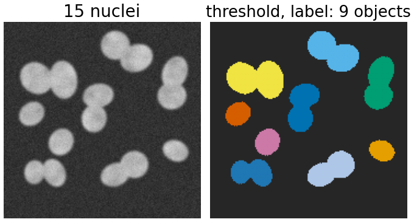
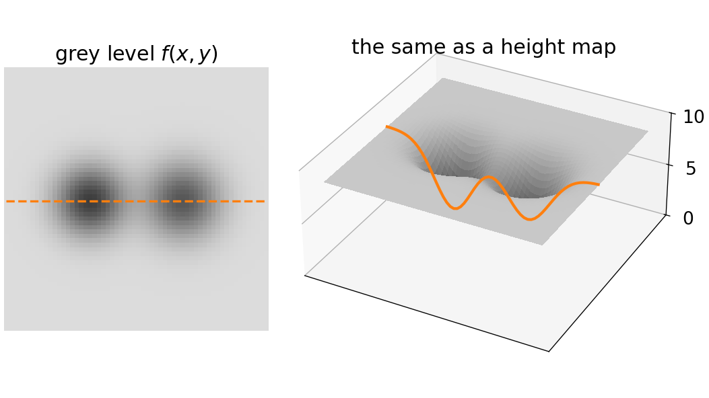
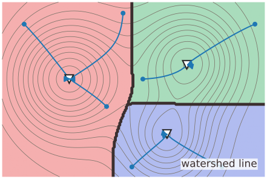
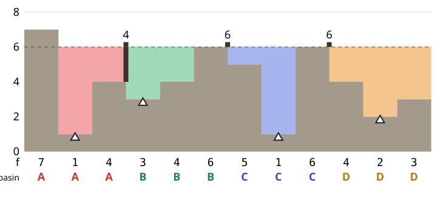
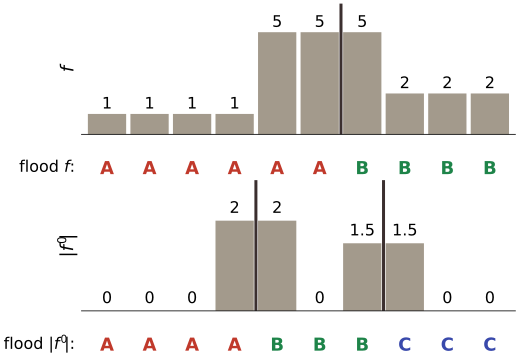
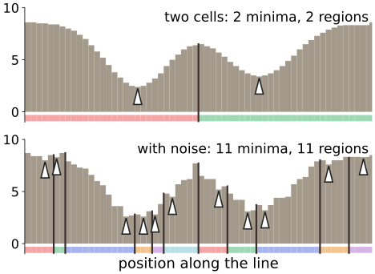
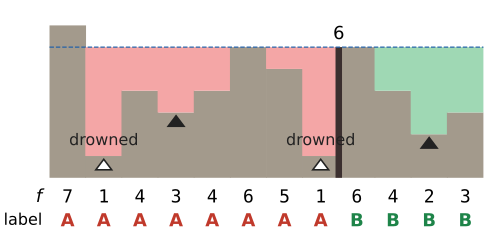

Thresholding and labelling turn an image into objects, but two touching cells come out as one object. The watershed splits them, using one picture: the image is a landscape, and we flood it with water.
Read a grey-level image as a height map: dark = low, bright = high.
Regional minima, catchment basins (where a drop of water ends up) and watershed lines (where it could go either way).
Flooding: water rises from every minimum; where two lakes would meet, build a dam. The dams are the boundaries.
What to flood: the intensity, or the gradient magnitude (dams on the edges).
The main problem of the day: every minimum makes a region, so noise makes many regions.
Slides titled The math give the formulas and proofs; the ideas are complete without them.
Where thresholding and labelling stop
Threshold → binary mask (the thresholding day); connected components → one label per object (the labelling day).
Touching cells share pixels above the threshold: one component, one label. The labelling day ended on exactly this case.
Uneven brightness: no single threshold fits the whole image (local thresholds: the thresholding day, local-threshold).
What is missing: a way to put a boundary between two bright blobs that touch, where the intensity dips only a little. That dip is what the watershed looks for.

Synthetic nuclei (left; the image of the last unit’s demo) and the labelled threshold mask (right): touching nuclei share one colour, so 15 nuclei give 9 objects.
An image is a landscape
Read the grey level f(x, y) as a height.
Dark nuclei on a bright background are valleys; the bright background is a high plain.
Two touching nuclei: two valleys separated by a low ridge (or a pass).
Rain falling on the landscape collects in the valleys. Every valley is one object.
Everything that follows is about finding the valleys and the ridges between them. Bright objects on a dark background? Flood the inverted image -f (or 255 - f).

Two dark nuclei as an image (left) and as a landscape (right): two valleys with a low ridge between them. The orange line is the “two cells” profile of the flood1d demo.
Minima, basins and watershed lines
Regional minimum: a connected plateau of equal height whose neighbours are all higher. A single pixel lower than its neighbours is the simplest case.
Catchment basin of a minimum: all points from which a drop of water, always running downhill along the steepest slope, ends up in that minimum.
Watershed line: the points where the drop could go either way: ridges and saddles.
The basins tile the image: one region per regional minimum, separated by watershed lines. The name comes from geography: the line between two river systems.

A landscape with three minima (▽) drawn as contour lines; each catchment basin has its own colour, the watershed lines are dark. Blue: drops of water running downhill along the steepest slope into the minimum of their basin.
The math: steepest descent
A drop follows the gradient flow \dot{\mathbf x}(t) = -\nabla f(\mathbf x(t)): downhill, along the steepest slope.
Catchment basin of a minimum m: \mathrm{CB}(m) = \{\mathbf x_0 : \mathbf x(t) \to m \text{ as } t \to \infty\}.
Watershed = the complement of the union of all basins: points whose flow ends at a saddle (or other critical point that is not a minimum).
Example: f(x, y) = (x^2 - 1)^2 + y^2 has minima at (\pm 1, 0) and a saddle at (0, 0). Since \dot x = -4x(x^2 - 1), the sign of x never changes along the flow: the basins are the half-planes x < 0 and x > 0, and the watershed line is x = 0, through the saddle.
On a pixel grid there is no gradient flow, only neighbours; the flooding view (next slide) gives a definition that works on grids.
Flooding
Pierce a hole at the bottom of every regional minimum and lower the landscape slowly into a lake.
Water enters through the holes; each basin fills with its own colour, all at the same water level.
Where water from two basins would meet, build a dam.
When the whole landscape is under water, only the dams stick out: they are the watershed lines, and every basin is one region.
A dam’s height is the height of the pass between the two basins: the lowest point at which they can overflow into each other.
For the cases in this course, flooding and the drop of water give the same basins; flooding is what the algorithm (next unit) implements.
Example: 12 samples

The 12-sample signal flooded to level 6: four basins (A–D), one per regional minimum (▲); dams at the passes, heights 4, 6 and 6.
f = 7\,1\,4\,3\,4\,6\,5\,1\,6\,4\,2\,3: regional minima at samples 1, 3, 7 and 10. Level 1: basins A and C start; level 2: D; level 3: B. At level 4, A and B meet over sample 2: first dam (height 4). At level 6, B–C and C–D meet: dams of height 6. Result: A\,A\,A\,B\,B\,B\,C\,C\,C\,D\,D\,D.
Try it: flooding a profile
The math: dams are minimax passes
Two minima a and b meet at the water level
\text{pass}(a, b) = \min_{\text{paths } a \to b} \ \max_{\mathbf x \text{ on the path}} f(\mathbf x),
the lowest possible “highest point” on a way from a to b. (In 1D there is only one path: the pass is the highest sample between them.)
Below that level the two lakes are disconnected; at it they touch: that is where and when the dam is built.
A basin’s depth (its dynamic): its bottom’s height subtracted from the lowest pass to a deeper basin. The same minimax structure gives h-minima (morphology day): a basin of depth \le h overflows when filled by h.
Pixel version: a pixel p gets label a if it can be reached from marker a by a path whose highest point is lower than on any path from another marker (with ties broken by the flooding order).
What to flood: intensity or gradient
Intensity: works when the objects are themselves valleys (dark nuclei, or bright ones inverted). The dams fall on the brightest line between them.
Gradient magnitude\|\nabla f\| (Sobel, the kernels day; Gaussian derivatives, the edges day): flat regions have a small gradient, so they are valleys; edges have a large gradient, so they are ridges. The dams fall on the edges.
1D: the step profile f = 1\,1\,1\,1\,5\,5\,5\,2\,2\,2 has |f'| = 0\,0\,0\,2\,2\,0\,1.5\,1.5\,0\,0 (central differences): three valleys (the three flat parts), ridges at the two edges. Flooding |f'| gives three regions with dams on the edges; flooding f itself gives only two (it has two minima: the 1-plateau and the 2-plateau) and splits the bright middle part between them.

The step profile f (top) and |f'| (bottom), with the labels from flooding each (every sample labelled; dark bars = boundaries). Flooding |f'| puts the boundaries on the two edges.
Try it: flood the derivative
Every minimum makes a region
Each regional minimum starts its own basin, so the number of regions = the number of minima.
Noise adds tiny dips everywhere: on a real image, the raw gradient has thousands of regional minima, and the watershed cuts the image into thousands of pieces. This is oversegmentation, the main problem of the watershed.
The “two cells” profile has 2 minima; with a little noise (preset “noisy”) it has 11.
Two cures, both from the morphology day:
h-minima: fill every basin by h first; basins shallower than h overflow and merge. One parameter in grey levels.
Markers: choose the sources yourself (one per object). Other minima are just puddles that get drowned when the water from a marker reaches them.

The flood1d demo’s “two cells” profile without and with noise: every regional minimum (▲) starts a basin (coloured strip), so 2 regions become 11.
Recall: h-minima (the morphology day)
Markers
A marker is a set of pixels that must belong to one region; each marker gets its own label.
Flooding starts only from the markers. A minimum without a marker is not a source: when the rising water of a marker spills into it, the whole puddle takes that marker’s colour.
Result: exactly one region per marker. The number of regions is decided by the markers; the flooding only decides where the boundaries go.
Where markers come from: clicks, a threshold, the peaks of another image (the distance transform in the last unit of the day).

The 12 samples flooded from two markers (filled ▲) up to level 6; the unmarked minima (open △) are drowned.
The 12 samples with markers only at samples 3 and 10: the minima at samples 1 and 7 are drowned; the result is A\,A\,A\,A\,A\,A\,A\,A\,B\,B\,B\,B (the dam on sample 8, height 6).
Summary
An image is a landscape: grey level = height. Regional minima, catchment basins, watershed lines on ridges and saddles.
Flooding: water rises from every minimum at the same level; dams where lakes meet. Dam height = the pass between two basins.
Flood the intensity when objects are valleys, the gradient magnitude when the boundaries are edges.
One region per regional minimum: noise causes oversegmentation. Cures: h-minima (fill shallow basins) and markers (choose the sources).
Next: the flooding algorithm on a pixel grid, by hand.